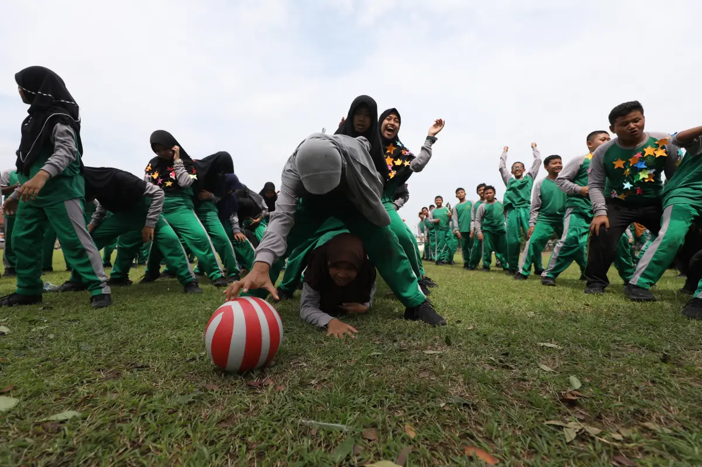

136 siswa MTsN 2 Kota Kediri membuktikan bahwa karakter strategis tidak lahir dari buku teks — melainkan dari tantangan nyata di lapangan. Ini yang terjadi di balik outbound School Journalist Trip.

Peserta outbound SJT MTsN 2 Kediri bermain di lapangan untuk melatih karakter strategis dan kerja sama tim.
Bukan Sekadar Bermain di Lapangan: Cara Game Outbound SJT Membentuk Karakter Strategis Siswa MTsN 2 Kota Kediri
Heri Muda S
Daftar Isi Artikel
Ada pelajaran yang tidak bisa diajarkan lewat papan tulis, tidak bisa diujikan dengan soal pilihan ganda, dan tidak bisa diselesaikan sendirian di meja belajar. Pelajaran itu bernama karakter — dan satu-satunya cara melatihnya adalah dengan menempatkan seseorang di tengah situasi nyata yang menuntut keputusan, kerja sama, dan keberanian untuk bertindak.
Itulah yang dialami 136 siswa kelas VII program layanan unggulan MTsN 2 Kota Kediri ketika mengikuti rangkaian kegiatan School Journalist Trip (SJT) bersama JP Radar Kediri, 21–22 April 2025. Sehari penuh mereka berlatih menjadi reporter cilik di lapangan. Keesokan harinya, alih-alih beristirahat, mereka justru hadir di Sport Art Centre Ngronggo sejak pukul 06.00 pagi — siap menghadapi satu tantangan demi tantangan dalam sesi outbound yang dirancang khusus untuk membentuk karakter strategis.
Apa Itu Outbound Karakter Strategis dan Mengapa Penting untuk Pelajar?
Outbound karakter strategis bukan sekadar permainan di luar ruangan. Ini adalah metode pembelajaran berbasis pengalaman (experiential learning) yang menempatkan peserta dalam situasi yang menuntut mereka berpikir cepat, berkoordinasi, dan menyelesaikan masalah bersama — dalam waktu terbatas, dengan tekanan nyata.
Metode ini berbeda secara fundamental dari pembelajaran konvensional di kelas:
Pembelajaran Kelas
Outbound Karakter
Pasif — mendengarkan dan mencatat
Aktif — bergerak dan memutuskan
Individual — nilai pribadi
Kolaboratif — sukses bergantung tim
Simulasi teoritis
Simulasi kondisi nyata
Gagal = nilai buruk
Gagal = kesempatan belajar ulang
Tekanan waktu minimal
Tekanan waktu maksimal
Ketika seorang siswa harus memimpin kelompoknya melewati game bertekanan tinggi, ia tidak hanya belajar strategi — ia melatih bagaimana cara dirinya merespons tekanan, membangun kepercayaan antar anggota tim, dan mengambil keputusan saat tidak ada jawaban yang sempurna.
Game Outbound SJT: Empat Tantangan yang Menguji Sisi Terbaik Para Siswa
Trainer outbound Munif Toha Mahsuni merancang sesi kegiatan ini dengan pendekatan progresif — setiap game memiliki tingkat tantangan dan pelajaran karakter yang berbeda. Berikut empat game utama yang dimainkan para siswa:
Treasure Island — Berpikir Strategis di Bawah Tekanan. Treasure island atau permainan pulau harta karun memaksa setiap kelompok untuk menyusun strategi bertahan dan bergerak secara taktis. Peserta tidak bisa berhasil hanya dengan berlari lebih cepat — mereka perlu membaca situasi, mengkalkulasi risiko, dan menentukan langkah yang paling efisien untuk mencapai tujuan. Pelajaran karakter yang dilatih: pengambilan keputusan strategis, manajemen risiko, dan adaptasi rencana saat kondisi berubah.
Water Tower — Membangun Sesuatu Bersama Tanpa Instruksi Lengkap. Dalam game water tower, setiap tim harus membangun "menara air" menggunakan bahan yang tersedia — dengan aturan yang menuntut kreativitas dan koordinasi tinggi. Game ini sengaja dirancang dengan ambiguitas tertentu: tidak semua instruksi diberikan secara jelas, dan setiap tim harus mengisi celah tersebut dengan inisiatif sendiri. Pelajaran karakter yang dilatih: kepemimpinan situasional, kreativitas berbasis keterbatasan, dan kepercayaan antar anggota tim.
Water Transfer — Kecepatan Tidak Berarti Banyak Tanpa Sinkronisasi. Water transfer menantang tim untuk memindahkan air dari satu titik ke titik lain menggunakan alat terbatas — tanpa boleh ada yang tumpah melebihi batas yang ditentukan. Game ini terlihat sederhana di awal, namun hampir semua tim yang terlalu percaya diri gagal di babak pertama karena mengabaikan pentingnya komunikasi antar anggota. Pelajaran karakter yang dilatih: komunikasi presisi, kesabaran kolektif, dan pemahaman bahwa kecepatan tanpa koordinasi justru kontraproduktif.
Terpal Rolling Sheeting Game — Tantangan Fisik yang Sesungguhnya Menguji Mental. Di antara semua game, terpal rolling sheeting adalah yang paling menuntut secara fisik sekaligus paling mengungkap karakter asli setiap peserta. Ketika tubuh lelah dan tantangan terasa berat, inilah momen di mana sikap sesungguhnya seorang pemimpin dan anggota tim terlihat nyata — apakah ia tetap mendorong timnya, menyerah, atau justru semakin keras berjuang. Pelajaran karakter yang dilatih: ketahanan mental (resilience), spirit kebersamaan, dan kepemimpinan di bawah tekanan fisik.
Mengapa Kegiatan Ini Dimulai Pukul 06.00 Pagi?
Bukan kebetulan. Waktu mulai pukul 06.00 adalah bagian dari desain program yang disengaja.
Memulai aktivitas berat di pagi buta — saat sebagian besar orang masih dalam mode "belum siap" — melatih peserta untuk tidak menunggu kondisi sempurna sebelum bergerak. Ini adalah salah satu karakter paling krusial yang harus dimiliki generasi pemimpin: kemampuan untuk segera aktif, bahkan ketika energi belum penuh dan kondisi belum ideal.
Para siswa yang hadir tepat waktu dan langsung terlibat sepenuhnya di pagi hari itu sudah mempraktikkan satu nilai karakter yang sangat berharga tanpa mereka sadari: disiplin dan kesiapan yang tidak bergantung pada motivasi sesaat.
Dua Hari yang Merancang Generasi Lebih Utuh
Outbound ini bukan kegiatan yang berdiri sendiri. Ini adalah bagian dari School Journalist Trip (SJT) — program dua hari yang dirancang untuk membekali siswa dengan dua dimensi pengembangan yang saling melengkapi:
Hari Pertama — Jurnalistik Lapangan: 136 siswa berpencar ke dua lokasi liputan nyata: Stasiun Meteorologi BMKG Dhoho di kawasan Bandara Kediri, dan Kantor Perwakilan Bank Indonesia Kediri di Jl. Brawijaya. Di sana mereka tidak duduk mendengarkan presentasi — mereka observasi langsung, memotret, mewawancarai narasumber, mengumpulkan data, dan menyusun laporan. Ini bukan simulasi. Mereka benar-benar bekerja sebagai reporter cilik di institusi nyata, bertemu narasumber nyata, dan menghasilkan konten yang nyata.
Hari Kedua — Outbound Karakter: Setelah menguras energi mental di hari pertama, hari kedua menguras energi fisik dan karakter melalui empat game outbound yang telah dirancang secara tematik. Kombinasi dua hari ini bukan kebetulan — kelelahan dari hari pertama menjadi kondisi ideal untuk menguji karakter asli peserta saat mereka menghadapi tantangan fisik di hari kedua.
Kepala MTsN 2 Kota Kediri, Drs. Muh. Nizar M.Pd., menegaskan bahwa pengalaman seperti ini memberikan dimensi yang tidak bisa diperoleh dari ruang kelas biasa. Kesempatan merasakan langsung kerja reporter — mulai mencermati lokasi, mengumpulkan data, mengemas, menyajikan, hingga mempublikasikan — adalah bekal nyata yang membentuk cara berpikir siswa secara fundamental.
Ingin Sekolah Anda Mengadakan Program Serupa?
Bagi sekolah dan institusi pendidikan yang ingin merancang program outbound karakter, leadership camp, atau experiential learning yang berdampak nyata bagi siswa, kami siap membantu.
Apa yang Benar-Benar Terbentuk Setelah Dua Hari Ini?
Ketika seseorang bertanya "apa yang didapat dari outbound?", jawaban yang paling dangkal adalah "seru dan menyenangkan." Jawaban yang lebih dalam — yang baru terasa beberapa minggu atau bulan kemudian — jauh lebih bernilai:
Kemampuan membaca dinamika tim secara cepat. Siswa yang mengikuti outbound ini belajar — melalui pengalaman nyata, bukan teori — bahwa setiap tim memiliki dinamika unik. Cara seseorang merespons tekanan, cara ia berkomunikasi saat frustrasi, dan cara ia merayakan keberhasilan bersama tim — semua ini menjadi data karakter yang sangat berharga bagi dirinya sendiri.
Kepercayaan diri yang lahir dari pencapaian nyata, bukan pujian kosong. Ketika seorang siswa berhasil melewati tantangan water tower yang terasa mustahil di awal, kepercayaan diri yang ia rasakan bukan berasal dari guru yang memujinya — melainkan dari bukti nyata bahwa ia mampu. Jenis kepercayaan diri inilah yang paling tahan lama.
Pemahaman bahwa kegagalan awal bukan akhir dari segalanya. Hampir semua tim mengalami kegagalan di satu atau lebih game. Bagaimana mereka bangkit, menyesuaikan strategi, dan mencoba kembali — itulah inti pembelajaran sesungguhnya yang tidak bisa diajarkan di kelas.
Identitas sebagai bagian dari tim yang lebih besar dari diri sendiri. Di akhir outbound, yang paling diingat bukan skor individu — melainkan momen-momen saat mereka berjuang bersama, gagal bersama, dan akhirnya berhasil bersama.
Kesalahan Umum dalam Mendesain Outbound untuk Pelajar
Tidak semua kegiatan outbound memberikan hasil yang diinginkan. Berikut kesalahan yang paling sering terjadi dan perlu dihindari:
Memilih game yang hanya menyenangkan tanpa tujuan karakter yang jelas. Outbound tanpa desain tematik hanya menjadi hiburan sesaat. Setiap game harus memiliki learning objective yang spesifik dan debriefing pasca-permainan yang mengikat pengalaman dengan pelajaran karakter.
Tidak ada sesi refleksi setelah aktivitas. Pengalaman tanpa refleksi hanya menjadi kenangan. Sesi debriefing — di mana peserta diajak mendiskusikan apa yang terjadi, mengapa, dan apa artinya bagi mereka ke depan — adalah bagian terpenting dari seluruh rangkaian outbound.
Menempatkan kompetisi di atas kolaborasi. Outbound yang terlalu kompetitif tanpa framework kolaborasi yang sehat bisa justru merusak dinamika tim. Desain game yang baik menyeimbangkan antara spirit kompetisi sehat dan penguatan kerja sama.
Lokasi dan durasi yang tidak sesuai kelompok usia. Outbound untuk pelajar SMP membutuhkan pendekatan berbeda dibanding karyawan dewasa. Pemilihan jenis game, tingkat kesulitan, dan durasi harus disesuaikan secara spesifik dengan karakteristik usia peserta.
Karakter Tidak Terbentuk di Bangku — Tapi Diuji di Lapangan
Ratusan siswa MTsN 2 Kota Kediri yang bangun lebih awal, hadir di lapangan sejak pukul 06.00, dan menghadapi tantangan demi tantangan tanpa menyerah — mereka tidak sekadar menyelesaikan rangkaian permainan. Mereka sedang melatih versi terbaik dari diri mereka sendiri.
Karakter strategis tidak lahir dari hafalan. Ia lahir dari momen ketika seseorang harus mengambil keputusan saat tidak ada pilihan yang sempurna, saat timnya bergantung padanya, dan saat waktu tidak memberikan kemewahan untuk ragu terlalu lama. Program outbound yang dirancang dengan baik bukan biaya tambahan dalam pendidikan — melainkan investasi terdalam dalam pembentukan generasi yang siap menghadapi dunia nyata.
Pertanyaan yang Sering Diajukan (FAQ)
Outbound biasa berfokus pada kesenangan dan aktivitas fisik. Outbound karakter dirancang dengan tujuan spesifik: setiap game dipilih untuk melatih dimensi karakter tertentu seperti kepemimpinan, komunikasi, ketahanan mental, atau pengambilan keputusan strategis — disertai sesi refleksi yang mengaitkan pengalaman dengan nilai yang ingin dibentuk.
Outbound karakter bisa dirancang untuk semua usia mulai dari SD hingga dewasa. Yang berbeda adalah desain game dan tingkat kompleksitasnya. Untuk pelajar SMP seperti siswa MTsN 2 Kota Kediri, kombinasi game fisik dan strategis dengan durasi terkontrol memberikan hasil optimal.
Ya — dengan syarat program dirancang secara terstruktur dan berkelanjutan. Satu kali outbound memberikan pengalaman dan insight awal yang berharga. Namun dampak jangka panjang terasa ketika sekolah mengintegrasikan outbound dalam program pengembangan karakter yang konsisten dan berkelanjutan sepanjang tahun.
Trainer outbound yang baik bukan hanya memandu permainan — ia merancang pengalaman belajar. Ia memilih game yang tepat untuk tujuan yang tepat, mengelola dinamika kelompok yang beragam, dan memimpin sesi debriefing yang mendalam setelah setiap aktivitas.
Ya. Program School Journalist Trip dan outbound karakter strategis tersedia untuk sekolah lain yang ingin memberikan pengalaman pembelajaran luar kelas yang bermakna bagi siswanya. RKK Institute siap merancang program yang disesuaikan dengan kebutuhan spesifik setiap institusi pendidikan.
Heri Muda Setiawan
Senior Manager Pemasaran JPRK
Seorang Wartawan Senior Jawa Pos Radar Kediri yang fokus pada Pendidikan, Pemerintahan, Ekonomi yang saat ini menjadi Senior Manager Pemasaran Jawa Pos Radar Kediri
Ajang Kompetisi Kompetensi Akademik (KKA) 2025 yang diselenggarakan Jawa Pos Radar Kediri menjadi sorotan dunia pendidikan di wilayah Kediri Raya. Bukan tanpa alasan — sebanyak 525 peserta terbaik dari babak penyisihan tampil pada Grand Final yang digelar di Graha IIK Bhakti Wiyata Kediri pada Oktober 2025.
Banyak yang mengira bahwa ilmu jurnalistik hanya untuk mereka yang ingin menjadi wartawan, dan public speaking hanya untuk calon politisi atau pembawa acara. Faktanya, di dunia nyata dan dunia profesional, kedua keterampilan ini adalah fondasi dasar komunikasi.
RK Institute dan GM Academy membuka program magang eksklusif bagi 30 mahasiswa di Kediri. Kuasai keahlian jurnalistik, video editing, hingga digital marketing melalui mentorship praktis di dunia kerja nyata.